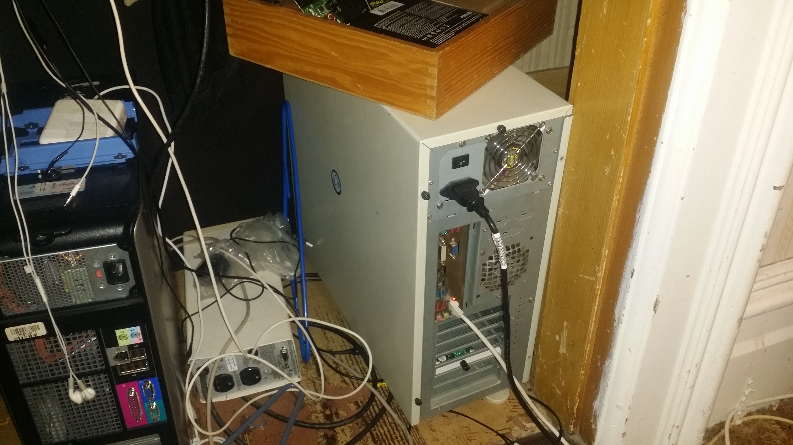
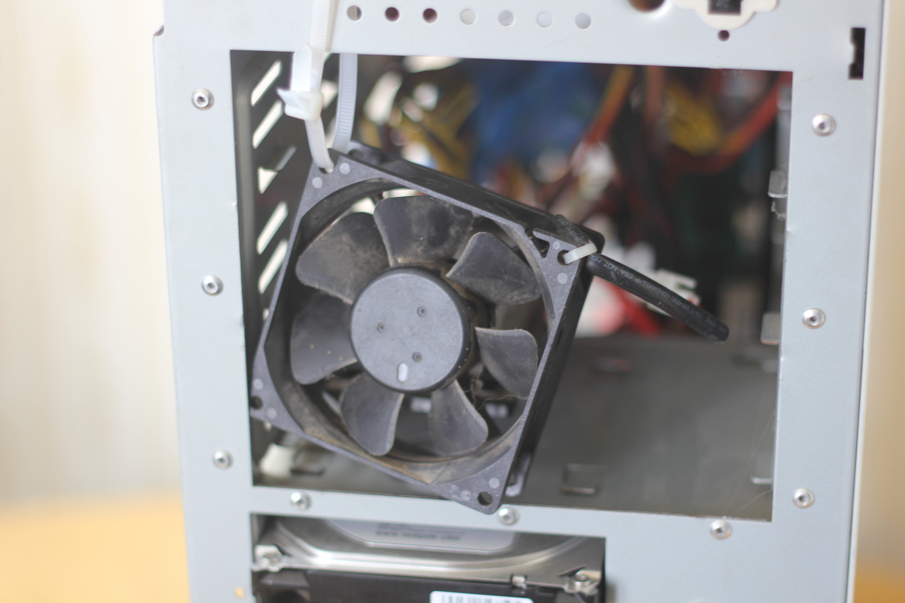

Projects
2015 ~ present
2D Ultrasonic mapping sensor

I worked on a landmine detection quadcopter with college Yekalo Aberha. Mr. Aberha and I, coded and build a lidar two diminsional mapping sensor. To create a graph of points to repersent what the sensor is resiving which was edges of objects.
- x = r × cos( θ )
- y = r × sin( θ )
We found out that the sensor was not working because we needen to conver the rotation of the sensor, into (x,y) coordiates.
For pictures of the project
Instuctables
Ubuntu home server

Code name "Mineturtle" and its a work in progress
I build a home media server for sharing video on the Local Area Network (LAN), downloading movies for my own personal enjoyment, and it also acts a FTP server for storing random computer files that I want ready access to. This project got me into the Ubuntu operating system which now I'm rather a fan of. Mineturtle is my linux testing ground for free software that interests me, and will work for my home.
9:46 PM Thursday, February 25, 2016 (PST)
Update For Mineturtle
Code name "Mineturtle" Before the rebuild, w/ the old case
This is Mineturtle the server with the case and everything mostly wired up.
The mineturtle server has underwent a lot of changes and upgrades to both the software and hard ware respectivly.
Is now less of a FTP (File Trasport Protocol) server and more of a Media server.
Software Updates
- Emby (upgraded to Plex) - free, but unpolished media sharing software.
 Plex - a media sharing application that make it seamless to view hosted movies on the hard drives in the server
Plex - a media sharing application that make it seamless to view hosted movies on the hard drives in the server- Transmission - is a bittorrent application that runs in the background downloading movies from the internet, while I sleep.
- Sickrage - this piece of software brings the whole project of media sharing to a new level, its job is to torrent movie/tv show files as they air. This in effect turns the server into a internet DVR. NOTE: sickrage sends all the bittorrent magnet links to Transmission to be downloaded at night (1:00 am - 6:00am).
Beyond Software changes I've made a lot of hardware readdtions which entaled rebuilding the whole system.
Hardware Upgrades
Storage
+3TB Western Digital
+1TB Seagate Specialized for Video playback
+2TB Hatachi
+2 X 500GB drives

Case
+NZXT Source 220 (Black)
Networking Card
+10Gb NIC
I purchesed a network card what has a theoretical speed of 1GB/sec. But my the real life trasfer speed didnt refelect 1GB/sec but the max of the hard drives which was around 100MB/S
I upgraded the storage capacity of the server by adding 5 new hard drives.
This is the server with the case and everything mostly wired up.
Upgrade Reasons
+11 Hard drive bays (provided some of the hard drives are installed in janky locations)
+Color Not Black!
+Cleaner look

+Fans actually provide cooling for hard drives
For the most part im happy with the upgrade. And I'm passionit about upgrades in the future.
10:25 PM Saturday, September 10, 2016 (PST)